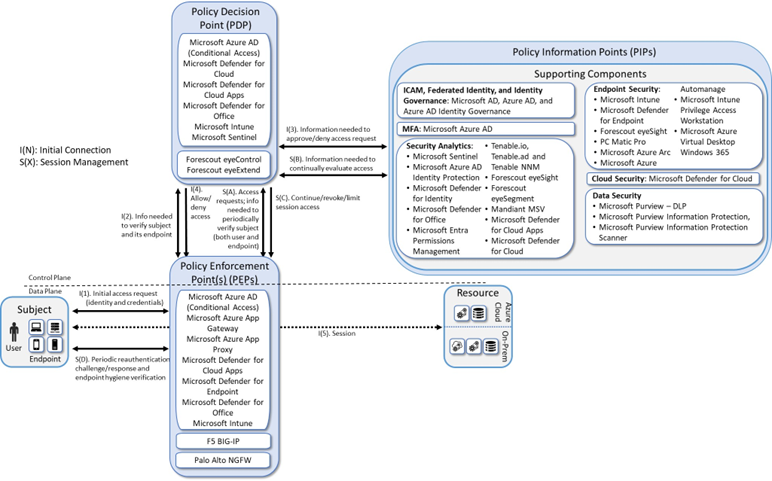
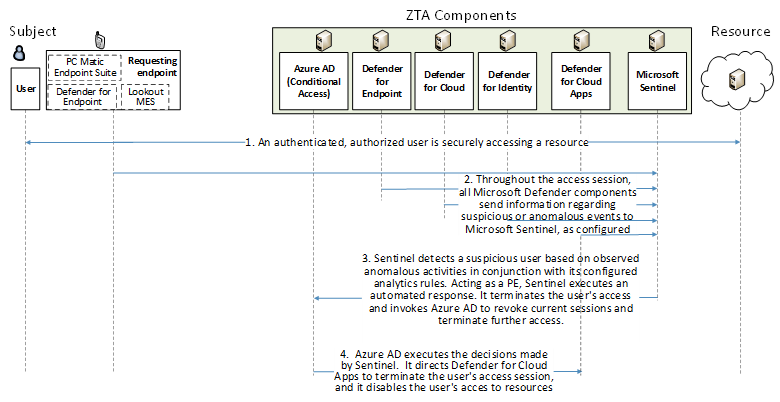
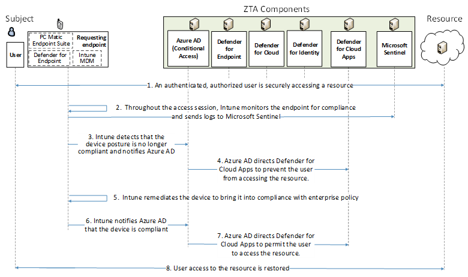
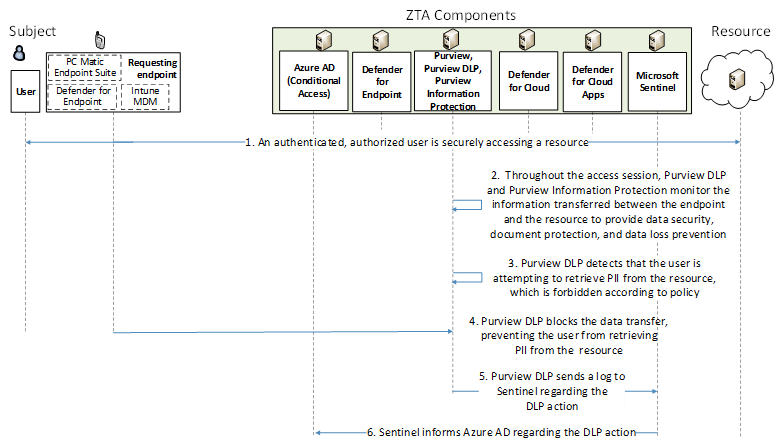
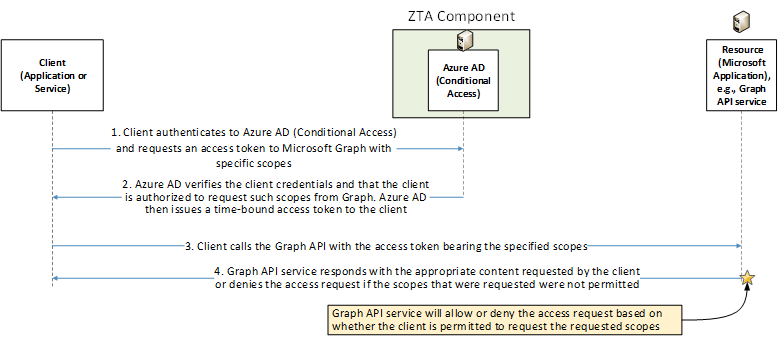

Enterprise 3 Build 3 (E3B3) - SDP and Microsegmentation - Microsoft Azure AD Conditional Access (later renamed Entra Conditional Access), Microsoft Intune, Microsoft Sentinel, Forescout eyeControl, and Forescout eyeExtend as PEs#
Note
This page is supplementary material for the NIST SP 1800-35 publication.
Technologies#
E3B3 uses products from F5, Forescout, Mandiant, Microsoft, Palo Alto Networks, PC Matic, and Tenable. Certificates from DigiCert are also used. For more information on these collaborators and the products and technologies that they contributed to this project overall, see Collaborators and Their Contributions.
E3B3 components consist of F5 BIG-IP, Microsoft AD, Microsoft Azure AD, Microsoft Azure AD (Conditional Access), Microsoft Azure AD Identity Governance, Microsoft Intune, Microsoft Sentinel, Microsoft Azure App Proxy, Microsoft Defender for Endpoint, Microsoft Azure AD Identity Protection, Microsoft Azure Application Gateway, Microsoft Defender for Identity, Microsoft Defender for Office, Microsoft Entra Permissions Management, Microsoft Defender for Cloud Apps, PC Matic Pro, Tenable.io, Tenable.ad, Tenable NNM, Mandiant Security Validation, Forescout eyeControl, Forescout eyeExtend, Forescout eyeSight, Forescout eyeSegment, Palo Alto Networks NGFW, Microsoft Purview - DLP, Microsoft Purview Information Protection, Microsoft Purview Information Protection Scanner, Microsoft Intune VPN Tunnel, Microsoft Azure Arc, Microsoft Azure Automanage, Microsoft Intune Privilege Access Workstation, Microsoft Azure Virtual Desktop, Microsoft Defender for Cloud, Microsoft Azure (IaaS), Microsoft 365 (SaaS), and DigiCert CertCentral. (Note that after this build was completed, the name Azure AD was changed to Entra ID. Also, the name Defender for Cloud Apps was changed to Defender for Apps and the name Azure Application Proxy was changed to Entra Application Proxy. This appendix uses the original name of Microsoft Azure AD, Microsoft Defender for Cloud Apps and Microsoft Azure App Proxy.)
Table 1 lists all of the technologies used in E3B3 ZTA. It lists the products used to instantiate each ZTA component and the security function that each component provides.
Table 1 - E3B3 Products and Technologies
Component |
Product |
Function |
|---|---|---|
PE |
Microsoft Azure AD (Conditional Access), Microsoft Defender for Cloud, Microsoft Defender for Cloud Apps, Microsoft Defender for Office, Microsoft Intune, Microsoft Sentinel, Forescout eyeControl, and Forescout eyeExtend |
Decides whether to grant, deny, or revoke access to a resource based on enterprise policy, information from supporting components, and a trust algorithm. |
PA |
Microsoft Azure AD (Conditional Access), Microsoft Defender for Cloud, Microsoft Defender for Cloud Apps, Microsoft Defender for Office, Microsoft Intune, Microsoft Sentinel, Forescout eyeControl, and Forescout eyeExtend |
Executes the PE’s policy decision by sending commands to a PEP that establishes and shuts down the communication path between subject and resource. |
PEP |
Microsoft Azure AD (Conditional Access), Microsoft Azure App Proxy, Microsoft Azure App Gateway, Microsoft Defender for Cloud Apps, Microsoft Defender for Endpoint, Microsoft Defender for Office, Microsoft Intune, F5 BIG-IP, and Palo Alto Networks Next Generation Firewall (NGFW) |
Guards the trust zone that hosts one or more enterprise resources; establishes, monitors, and terminates the connection between subject and resource as directed by the PA; forwards requests to and receives commands from the PA. |
ICAM - Identity Management |
Microsoft AD and Azure AD |
Creates and manages enterprise user and device accounts, identity records, role information, and access attributes that form the basis of access decisions within an organization to ensure the correct subjects have the appropriate access to the correct resources at the appropriate time. |
ICAM - Access & Credential Management |
Microsoft AD and Azure AD |
Manages access to resources by performing user and device authentication (e.g., SSO and MFA) and using identity, role, and access attributes to determine which access requests are authorized. |
ICAM - Federated Identity |
Microsoft AD and Azure AD |
Aggregates and correlates all attributes relating to an identity or object that is being authorized by a ZTA. It enables users of one domain to securely access data or systems of another domain seamlessly, and without the need for completely redundant user administration. Federated identity encompasses the traditional ICAM data, supports identities that may be part of a larger federated ICAM community, and may include non-enterprise employees. |
ICAM - Identity Governance |
Microsoft AD and Azure AD Identity Governance |
Provides policy-based, centralized, automated processes to manage user identity and access control functions (e.g., ensuring segregation of duties, role management, logging, access reviews, analytics, reporting) to ensure compliance with requirements and regulations. |
ICAM - MFA |
Azure AD (Multi-Factor Authentication) |
Authenticates user identity by requiring the user to provide not only something they know (e.g., a password), but also something they have (e.g., a token). |
Endpoint Security - UEM/MDM |
Microsoft Intune |
Manages and secures enterprise desktop computers, laptops, and/or mobile devices in accordance with enterprise policy to protect applications and data; ensure device compliance; mitigate and remediate vulnerabilities and threats; monitor for suspicious activity to prevent and detect intrusions; prevent, detect, and disable malware and other malicious or unauthorized traffic; repair infected files when possible; provide alerts and recommend remediation actions; and encrypt data. Pushes enterprise applications and updates to devices, enables users to download enterprise applications that they are authorized to access, remotely deletes all applications and data from devices if needed, tracks user activity on devices, and detects and addresses security issues on the device. |
Endpoint Security - EPP |
Microsoft Defender for Endpoint, Forescout eyeSight, and PC Matic Pro |
Detects and stops threats to endpoints through an integrated suite of endpoint protection technologies including antivirus, data encryption, intrusion prevention, EDR, and DLP. May include mechanisms that are designed to protect applications and data; ensure device compliance with policies regarding hardware, firmware, software, and configuration; monitor endpoints for vulnerabilities, suspicious activity, intrusion, infection, and malware; block unauthorized traffic; disable malware and repair infections; manage and administer software and updates; monitor behavior and critical data; and enable endpoints to be tracked, troubleshooted, and wiped, if necessary. |
Security Analytics - SIEM |
Microsoft Sentinel |
Collects and consolidates security information and security event data from many sources; correlates and analyzes the data to help detect anomalies and recognize potential threats and vulnerabilities; and logs the data to adhere to data compliance requirements. |
Security Analytics - SOAR |
Microsoft Sentinel |
Integrates the SIEM and other security tools into a single pane of glass to support generation of insights into threats and help track, manage, and resolve cybersecurity incidents. Executes predefined incident response workflows to automatically analyze information and orchestrate the operations required to respond. |
Security Analytics - Identity Monitoring |
Microsoft Azure AD Identity Protection |
Monitors the identity of subjects to detect and send alerts for indicators that user accounts or credentials may be compromised, or to detect sign-in risks for a particular access session. |
Security Analytics - User Behavior Analytics |
Microsoft Defender for Cloud Apps, and Microsoft Defender for Identity |
Monitors and analyzes user behavior to detect unusual patterns or anomalies that might indicate an attack. |
Security Analytics - Security Monitoring |
Microsoft Defender for Identity |
Monitors and detects malicious or suspicious user actions based on on-premises AD signals. |
Security Analytics - Application Protection and Response |
Microsoft Defender for Office |
Protects Exchange Online and other Office applications from phishing, spam, malware and other zero-day attacks. |
Security Analytics - Cloud Access Permission Manager |
Microsoft Entra Permissions Management |
Provides visibility and control of permissions used by identities in Azure, Amazon Web Services, and Google Cloud Platform. |
Security Analytics - Endpoint Monitoring |
Tenable.io and Forescout eyeSight |
Discovers all IP-connected endpoints and performs continuous collection, examination, and analysis of software versions, configurations, and other information regarding hosts (devices or VMs) that are connected to the network. |
Security Analytics - Vulnerability Scanning and Assessment |
Microsoft Defender for Cloud, Tenable.io and Tenable.ad |
Scans and assesses the enterprise infrastructure and resources for security risks; identifies vulnerabilities and misconfigurations; and provides remediation guidance regarding investigating and prioritizing responses to incidents. |
Security Analytics - Traffic Inspection |
Forescout eyeSight and Tenable NNM |
Intercepts, examines, and records relevant traffic transmitted on the network. |
Security Analytics - Network Discovery |
Forescout eyeSight and Tenable NNM |
Discovers, classifies, and assesses the risk posed by devices and users on the network. |
Security Analytics - Validation of Control |
Forescout eyeSegment |
Validates the controls implemented through visibility into network traffic and transaction flows. |
Security Analytics - Security Validation |
Mandiant Security Validation |
Provides visibility and evidence on the status of the security controls’ effectiveness in the ZTA. Enable security capabilities of the enterprise to be monitored and verified by continuously validating and measuring the cybersecurity controls; also used to automate the demonstrations that were performed to showcase ZTA capabilities. Mandiant Security Validation is deployed throughout the project’s laboratory environment to enable monitoring and verification of various security aspects of the builds. VMs that are intended to operate as actors are deployed on each of the subnetworks in each of the enterprises. These actors can be used to initiate various actions for the purpose of verifying that security controls are working to support the objectives of zero trust. |
Security Analytics - Security Analytics and Access Monitoring |
Microsoft Defender for Cloud Apps |
Monitors cloud resource access sessions for conformance to policy. |
Data Security - Data Discovery, Classification, Labeling, Access Protection, and Auditing and Compliance |
Microsoft Purview DLP, Microsoft Purview Information Protection, and Microsoft Purview Information Protection Scanner |
Discovers, classifies, and labels sensitive business critical data in the cloud and on-premises, and provides protection by preventing unauthorized access and minimizing the risk of data theft and data leaks using security policy rules. |
General - Remote Connectivity |
Azure AD Application Proxy, Microsoft Defender for Cloud Apps, Microsoft Intune VPN Tunnel, and Palo Alto Networks NGFW |
Microsoft Intune VPN Tunnel provides secure remote access from mobile devices to on-premises resources using modern authentication and conditional access. Palo Alto Networks NGFW is used to provide remote users’ connectivity to on-premises resources. Also, two options are available to support remote users’ connectivity to resources in IaaS: The Azure AD Application Proxy can be used to connect directly to private applications, and Microsoft Defender for Cloud Apps can be used to connect to public-facing applications. Palo Alto Networks NGFW can be used to reach on-premises, and then the IPsec tunnel can be used to connect from on-premises to IaaS. |
General - Certificate Management |
DigiCert CertCentral TLS Manager |
Provides automated capabilities to issue, install, inspect, revoke, renew, and otherwise manage TLS certificates. |
General - Configuration Management |
Microsoft Azure Arc and Microsoft Azure Automanage |
Enables the management and configuration of resources such as VMs and containers on-premises and in other clouds via Azure management tools. |
General - Secure Admin Workstation |
Microsoft Intune Privilege Access Workstation (PAW) |
Provides a securely configured workstation that is dedicated to performing sensitive tasks. |
General - Virtual Desktop |
Microsoft Azure Virtual Desktop |
Enables secure streaming of the Windows desktop experience from the cloud to an endpoint or handheld device. |
Resource Protection - Cloud Workload Protection |
Microsoft Defender for Cloud, and Microsoft Defender for Cloud Apps |
Secures cloud workloads to protect them from known security risks and provides alerts to enable real-time reaction to prevent security events from developing. Monitors traffic to and from cloud and web applications and provides session control to prevents sensitive information from leaving. |
Resource Protection - Cloud Security Posture Management |
Microsoft Defender for Cloud |
Continually assesses the security posture of cloud resources. |
General - Cloud IaaS |
Azure - GitLab and WordPress |
Provides computing resources, complemented by storage and networking capabilities, hosted by a cloud service provider, offered to customers on demand, and exposed through a GUI and an API. |
General - Cloud SaaS |
DigiCert CertCentral, Microsoft Azure AD, Microsoft Defender for Endpoint, Microsoft Defender for Cloud, Microsoft Defender for Cloud Apps, Microsoft Identity Governance, Microsoft Intune, Microsoft 365, Microsoft Sentinel, and Tenable.io |
Cloud-based software delivered for use by the enterprise. |
General - Application |
GitLab |
Example enterprise resource to be protected. (In this build, GitLab is integrated directly with Azure AD using SAML, and Microsoft Sentinel pulls logs from GitLab.) |
General - Application |
Guacamole |
Example enterprise resource to be protected. (In this build, BIG-IP serves as an identity-aware proxy that protects access to Guacamole, and BIG-IP is integrated with Azure AD using SAML. Also, Microsoft Sentinel pulls logs from Guacamole.) |
General - Enterprise-Managed Device |
Windows client, macOS client, and mobile devices (iOS and Android) |
Example endpoints to be protected. (In this build, all enterprise-managed devices are enrolled into Microsoft Intune.) |
General - BYOD |
Windows client, macOS client, and mobile devices (iOS and Android) |
Example endpoints to be protected. |
Build Architecture#
In this section we present the logical architecture of E3B3. We also describe E3B3’s physical architecture and present message flow diagrams for some of its processes.
Logical Architecture#
Figure 1 depicts the logical architecture of E3B3. Figure 1 uses numbered arrows to depict the general flow of messages needed for a subject to request access to a resource and have that access request evaluated based on subject identity (both requesting user and requesting endpoint identity), authorizations, and requesting endpoint health. It also depicts the flow of messages supporting periodic reauthentication of the requesting user and the requesting endpoint and periodic verification of requesting endpoint health, all of which must be performed to continually reevaluate access. The labeled steps in Figure 1 have the same meanings as they do in Architecture - Figure 1. However, Figure 1 includes the specific products that instantiate the architecture of E3B3. Figure 1 also does not depict any of the resource management steps found in Architecture - Figure 1 because the ZTA technologies deployed in E3B3 do not support the ability to perform authentication and reauthentication of the resource or periodic verification of resource health.
E3B3 was designed with Microsoft Azure AD (Conditional Access), Microsoft Defender for Cloud, Microsoft Defender for Cloud Apps, Microsoft Defender for Office, Microsoft Intune, Microsoft Sentinel, Forescout eyeControl, and Forescout eyeExtend as the ZTA PEs and PAs, and Microsoft AD and Azure AD providing ICAM support. It includes nine PEPs: Microsoft Azure AD (Conditional Access), Microsoft Azure App Gateway, Microsoft Azure App Proxy, Microsoft Defender for Cloud Apps, Microsoft Defender for Endpoint, Microsoft Defender for Office,Microsoft Intune, F5 BIG-IP, and Palo Alto Networks NGFW. A more detailed depiction of the messages that flow among components to support user access requests in the case in which a new endpoint is detected on the network and checked for compliance can be found in E3B2 - Message Flows for a Successful Resource Access Request.
Figure 1 - Logical Architecture of E3B3

Physical Architecture#
Enterprise 3 describes the physical architecture of the E3B3 network.
Message Flows for a Successful Resource Access Request#
The two message flows for E3B1 that are described in E3B1 - Message Flows for a Successful Resource Access Request both still apply to E3B3 for cases in which the resource being accessed is located on-premises. Those message flows depict the use cases in which an on-premises resource being accessed is protected by Azure AD alone (see Use Case in which Resource Access Is Enforced by Azure AD), and in which an on-premises resource being accessed is protected by Azure AD in conjunction with the F5 BIG-IP PEP (see Use Case in which Resource Access Is Enforced by an F5 BIG-IP PEP).
In addition, three additional high-level message flows that are described in E3B2 - Message Flows for a Successful Resource Access Request also still apply to E3B3. These message flows describe the cases in which a private resource being accessed is located in the cloud (see Use Case in which Access to a Private Cloud Resource is Enforced by Azure AD and Azure AD’s Application Proxy); an externally-facing resource being accessed is in the cloud (see Use Case in which Access to an Externally Facing Cloud Resource is Enforced by Azure AD and Monitored by Microsoft Defender for Cloud Apps); and a new endpoint is discovered on the network, found to be non-compliant with enterprise policy, and blocked from accessing all resources (see Use Case in which a Non-Compliant Endpoint is Discovered on the Network and Blocked from Accessing Resources).
This section presents high-level message flows, each of which supports the use case in which an authenticated, authorized user who has already been granted access to a resource is engaged in an active access session when events occur that cause the user’s access to be revoked.
In the first flow, many Microsoft Defender components are running to monitor and protect access to the resource (Defender for Endpoint, Defender for Cloud, Defender for Cloud Apps, Defender for Identity). The Defender security portal enables a network administrator to see all of the information produced by these Defender components in a single pane of glass. These Defender components all send suspicious or anomalous event information to Microsoft Sentinel. Sentinel uses configured automation rules to determine that the detected event is a dangerous enough activity that it warrants revoking the user’s existing access. Sentinel directs Azure AD to restrict user access and take other policy-based action based on the event information.
In the second flow, Intune MDM monitors the endpoint for compliance and sends logs to Sentinel. When Intune detects that the device posture is no longer compliant, it notifies Azure AD, which prevents the user from accessing the resource until the endpoint can be remediated and brought back into compliance.
In the third flow, as the user is accessing the resource, Microsoft Purview DLP detects that the user is attempting to send PII to the resource, which is prohibited by policy. Purview DLP blocks this data from being transferred and sends logs to Sentinel.
Use Case in which Azure AD takes action based on log information forwarded by Sentinel#
Figure 2 depicts the message flow for the use case in which Azure AD blocks user access based on information forwarded by Sentinel.
Figure 2 - Use Case E3B3 - Azure Decisions Are Based on Sentinel Log Information

The message flow depicted in Figure 2 consists of the following steps:
An authenticated, authorized user is securely accessing a resource.
Throughout this ongoing access session, all Microsoft defender components (e.g., Defender for Endpoint, Defender for Cloud, Defender for Cloud Apps, Defender for Identity) send in-formation regarding events that are considered suspicious or anomalous to Microsoft Sentinel.
Sentinel, which has been configured with rule-based analytics and automation workflows, de-tects a suspicious user based on observed anomalous activities in conjunction with its config-ured analytics rules. Sentinel acts as the PE and initiates an automated response based on its automation rules. As part of its automated response, Sentinel decides to terminate the user’s access and invokes Azure AD to revoke current sessions and terminate further access.
Azure AD executes the decisions made by Sentinel by directing Defender for Cloud Apps to terminate the user’s access session, and Azure AD also disables the user’s access to resources.
Use Case in which Intune determines that an endpoint is non-compliant and blocks its access to the resource until device posture can be remediated#
Figure 3 depicts the message flow for the case in which Azure AD blocks user access based on device non-compliance information provided by Intune.
Figure 3 - Use Case E3B3 - A Device that Intune Determines to be Non-Compliant is Temporarily Blocked from Accessing the Resource until It is Remediated and Brought Back Into Compliance

The message flow depicted in Figure 3 consists of the following steps:
An authenticated, authorized user is securely accessing a resource.
Throughout this ongoing access session, Intune monitors the endpoint for compliance and sends logs to Microsoft Sentinel.
Intune detects that the device’s posture is no longer compliant, so it alerts Azure AD.
Azure AD directs Defender for Cloud Apps to prevent the user from accessing the resource.
Intune remediates the device posture to bring it into compliance with enterprise policy.
Intune notifies Azure AD that the device is compliant.
Azure AD directs Defender for Cloud Apps to permit the user to access the resource.
Use Case in which Purview DLP blocks the transfer of data that is prohibited from being sent from the enterprise#
Figure 4 depicts a high-level message flow that supports the use case in which Purview DLP blocks a user’s attempt to retrieve PII from the resource.
Figure 4 - Use Case E3B3 - Purview DLP Blocks an Attempt to Retrieve PII from the Resource

The message flow depicted in Figure 4 consists of the following steps:
An authenticated, authorized user is securely accessing a resource.
Throughout this ongoing access session, Purview DLP and Purview Information Protection monitor the information transferred between the endpoint and the resource to provide data security, document protection, and data loss prevention.
Purview DLP detects that the user is attempting to retrieve PII from the resource, which is for-bidden according to enterprise policy.
Purview DLP blocks the data transfer, preventing the user from retrieving the PII from the re-source.
Purview DLP sends a log to Sentinel regarding the DLP action.
Sentinel informs Azure AD regarding the DLP action.
Use Case in which a service/application requests access to a Microsoft Application#
This subsection discusses the steps needed to enable one application/service to access a Microsoft application. Prior to such a service-to-service request, the application or service that will request access to the Microsoft service, also referred to as the client, must be registered in the Authorization Server/IdP (which, in this case, is Microsoft Azure AD) and issued a client ID and a client secret. The client’s permissions must also be configured.
Figure 5 depicts the message flow for the use case in which an application/service requests access to a Microsoft Application. Microsoft Azure AD issues access tokens to authenticated users or applications seeking to make API calls to various Microsoft services and applications. In this example Microsoft Graph is the example application to which access is being requested.
Figure 5 - Use Case E3B3 - Service-to-Microsoft Service Access

The message flow depicted in Figure 5 consists of the following steps:
The client authenticates to Microsoft Azure AD (Conditional Access) and requests an access token to Microsoft Graph with specific scopes (for example: User.Read.All or Files.Read.AsUser).
Microsoft Azure AD (Conditional Access) verifies the client credentials, and that the client is authorized (coarse-grained authorization) to request such scopes from Graph. Azure AD then issues a time-bound access token to the client.
The client calls the Graph API with the access token bearing the specified scopes.
The Graph API service responds with the appropriate content requested by the client or de-nies the access request if the scopes requested are not permitted.